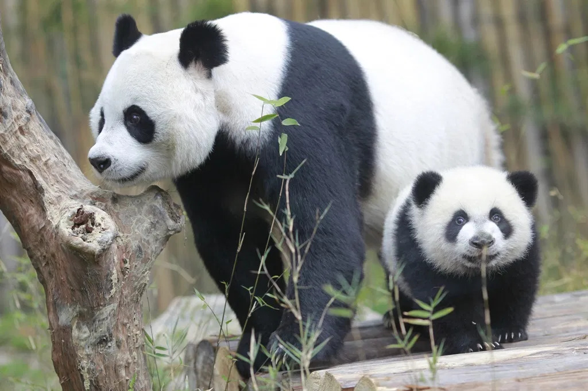
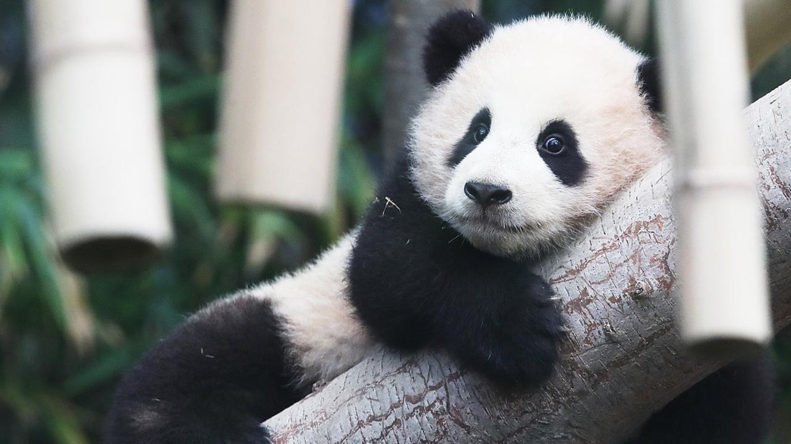
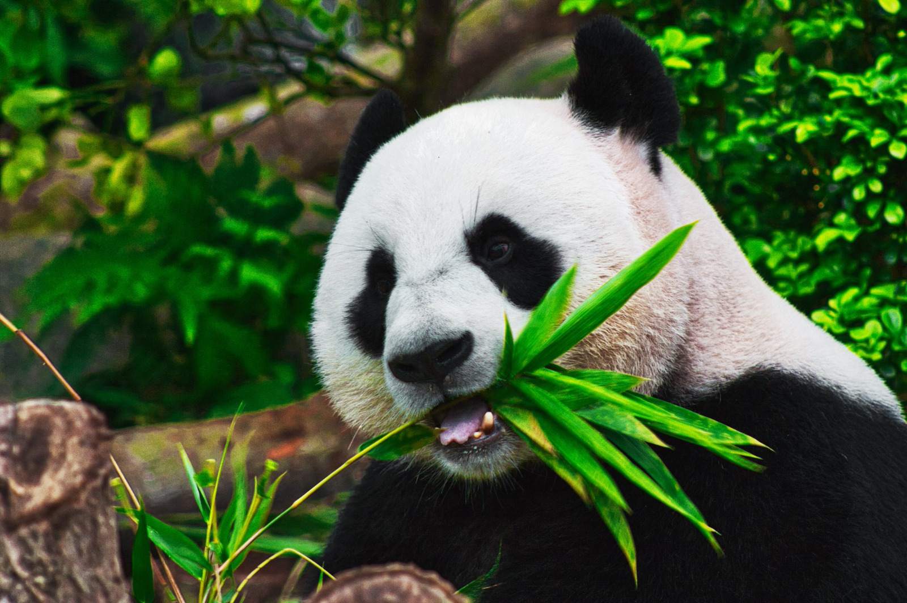

General
The giant panda is a national treasure in China and is therefore protected by law in its bamboo forest home. This unique bear has long been revered and can be found in Chinese art dating back thousands of years. The Chinese call the beloved pandas large bear-cats. Giant pandas have also fascinated people living outside of China; French Missionary Pere Armand David first described them for science in 1869. Now, more than 100 years later, the worldwide love for pandas has been combined with international conservation efforts.
Giant pandas live in the mountains of southwestern China, in damp, misty forests, mostly at elevations between 4,000 and 11,500 feet (1,200 to 3,500 meters). They need old-growth conifer forests with at least two types of bamboo and water access. These old-growth forests provide old, hollow logs and tree stumps large enough for panda dens. Pandas stay in a home range that’s 3 to 7 square miles (8 to 18 square kilometers). In areas where food isn’t as plentiful, the home range might be a bit larger. Like other bears, pandas spend most of the day eating and sleeping.
Large males may attain 1.8 metres (6 feet) in length and weigh more than 100 kg (220 pounds); females are usually smaller. Round black ears and black eye patches stand out against a white face and neck. Black limbs, tail, legs, and shoulders contrast with the white torso. The rear paws point inward, which gives pandas a waddling gait. Pandas can easily stand on their hind legs and are commonly observed somersaulting, rolling, and dust-bathing. Although somewhat awkward as climbers, pandas readily ascend trees and, on the basis of their resemblance to bears, are probably capable of swimming. An unusual anatomical characteristic is an enlarged wrist bone that functions somewhat like a thumb, enabling pandas to handle food with considerable dexterity.
As much as 90–98 percent of the panda’s diet consists of the leaves, shoots, and stems of bamboo, a large grass available year-round in much of China’s forested regions. Despite adaptations in the forepaws, teeth, and jaws for bamboo consumption, the giant panda has retained the digestive system of its carnivore ancestry and is therefore unable to digest cellulose, a main constituent of bamboo. Pandas solve this problem by rapidly passing prodigious quantities of the grass through their digestive tracts on a daily basis. As much as 16 out of every 24 hours is spent feeding, and elimination of wastes occurs up to 50 times per day. Fossilized dental remains indicate that the giant panda committed to bamboo as its principal food source at least three million years ago. Although unable to capture prey, pandas retain a taste for meat, which is used as bait to capture them for radio collaring and has made them pests in human camps on occasion. The species cannot naturally survive outside bamboo forests, though in captivity they have been maintained on cereals, milk, and garden fruits and vegetables. Bamboo is the healthier diet for captive pandas.
A newborn panda is about the size of a stick of butter—about 1/900th the size of its mother—but females can grow up to about 200 pounds, while males can grow up to about 300 pounds as adults. These bears are excellent tree climbers despite their bulk.
How many are there?
Giant pandas face big problems: today, only over 1,800 giant pandas survive on Earth. Until 2016, they were categorized as Endangered on the International Union for Conservation of Nature Red List of Threatened Species. They are currently listed as Vulnerable, thanks to numerous conservation efforts that have helped to increase their population.
As few as 1,864 giant pandas live in their native habitat, while another 600 pandas live in zoos and breeding centers around the world. Until 2016, they were categorized as Endangered on the International Union for Conservation of Nature Red List of Threatened Species. They are currently listed as Vulnerable, thanks to numerous conservation efforts that have helped to increase their population. The largest threat to giant panda survival is habitat destruction. People in need of food and income have cleared forests for agriculture and timber. This logging has fragmented a once continuous habitat, leaving small groups of pandas isolated from each other. When populations become small, they are extremely susceptible to extinction due to environmental or genetic influences, such as drought or inbreeding. Small populations cannot rebound the same way large populations do; as groups of pandas become more isolated, it is more likely that reproduction, disease resistance and population stability will be threatened.